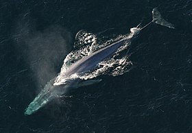

Informações sobre a Baleia Azul
A baleia azul é o maior animal conhecido a ter existido na Terra. Com um comprimento médio de 25 metros e um peso de até 200 toneladas, ela é verdadeiramente gigantesca. Sua língua sozinha pode pesar tanto quanto um elefante, e seu coração, do tamanho de um carro pequeno, pode ser ouvido batendo a quilômetros de distância.
A baleia azul é um mamífero marinho e pertence à família dos cetáceos. Ela é caracterizada por sua coloração azul acinzentada e por ter uma forma alongada e hidrodinâmica. Essas majestosas criaturas podem ser encontradas em todos os oceanos do mundo, geralmente em águas profundas.
Apesar de seu tamanho impressionante, a baleia azul se alimenta principalmente de pequenos organismos marinhos chamados krill. Ela usa suas placas de barbatanas para filtrar grandes quantidades de água e capturar esses minúsculos crustáceos.
